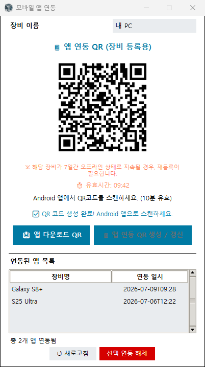

Node S (for Pi) 사용 방법
노드S는 PC에서 운영 중인 노드의 상태를 휴대폰으로 모니터링하고, 문제가 생기면 푸시 알림으로 알려주는 서비스입니다. 아래 순서대로 따라 하시면 됩니다.
※ 화면 사진은 누르면 크게 볼 수 있습니다.
1. 시작하기 (앱 설치 · 로그인)
- Google Play에서 Node S (for Pi) 앱을 설치합니다.
(Google Play에서 열기)
- 앱을 열고 [🔑 Google 로그인] 버튼을 눌러 Google 계정으로 로그인합니다.
- 로그인하면 자동으로 가입되며, 신규 가입 보너스 포인트(140P)가 지급됩니다.
- 로그인 직후에는 아직 등록된 장비가 없어 아래 오른쪽 화면처럼 표시됩니다. 이제 PC와 연동하면 됩니다.
2. PC에 노드S 설치하기
- 모니터링할 PC에서 인터넷 브라우저를 열고, 주소창에 sd.yongk.kr 을 입력하면 노드S PC 프로그램 설치 파일을 다운로드할 수 있습니다.
- 다운로드한 파일을 실행해 노드S PC 프로그램을 설치하고 실행합니다.
- 처음 실행하면 초기 설정 마법사가 나타납니다. 안내에 따라 설정을 완료하세요.
- 설정이 끝나면 아래처럼 메인 화면이 열리고, PC 상태를 자동으로 보고하기 시작합니다.
- ● 서버 연결됨 — 프로그램이 서버와 정상 연결된 상태입니다.
- CPU · 메모리 · 도커 · 파이 노드 · 블록 높이 · 연결 수 등 노드 상태를 실시간으로 보여줍니다.
- 아웃고잉과 인커밍 연결 상태를 확인 가능합니다.
- 하단 [QR 코드 확인] — 곧바로 모바일 앱 연동용 QR 화면을 엽니다. [PC카톡 채팅 연결]은 문의 채널로 연결됩니다.
💡 PC 프로그램이 켜져 있어야 모니터링이 됩니다. [메뉴 > 윈도우 시작 시 자동 실행]을 켜두면 PC를 켤 때 자동으로 실행돼 편리합니다.
3. 앱과 PC 연동하기 (장비 등록)
- PC 프로그램 상단 메뉴에서 [📱 모바일 앱 연동]을 클릭한 뒤 [앱 연동 QR 생성] 버튼을 누르면 QR 코드가 표시됩니다. (QR은 10분간 유효합니다)
- 휴대폰 앱 홈 화면 오른쪽 위 [＋ 장비 등록]을 누릅니다. 처음이라면 카메라 권한을 허용해 주세요.
- 카메라 화면이 열리면 PC의 QR 코드를 비춥니다.
- 등록 직전에 포인트 사용 안내창이 표시됩니다. [등록]을 누르면 장비 등록이 완료됩니다.
PC 화면 — 여기서 QR을 띄웁니다

PC: [📱 모바일 앱 연동] → [앱 연동 QR 생성]을 누르면 QR이 표시됩니다 (10분 유효)
휴대폰 화면 — 위 QR을 스캔합니다
💡 휴대폰 기본 카메라로 QR을 찍어도 앱이 자동으로 열리며 같은 방식으로 등록됩니다.
💡 여러 대의 PC를 모니터링하려면, PC마다 위 연동 과정을 반복하면 됩니다.
⚠️ 장비가 7일간 오프라인 상태로 지속되면 연동이 해제되어 재등록이 필요합니다.
4. 홈 화면 보는 법
- 보유 포인트 — 현재 잔액이 표시되고, 옆의 [포인트 내역]·[충전] 버튼으로 이동할 수 있습니다.
- 장비 카드 — 장비 이름, PC 프로그램 버전, 마지막 신호 시각, 온라인/오프라인 상태가 표시됩니다.
- 도커✓ · 파이✓ · 블록✓ — 도커 실행 / Pi 노드 프로그램 실행 / 블록 동기화 상태를 한눈에 보여줍니다. 문제가 있으면 ✓ 대신 ✗로 표시됩니다.
- 새로고침 — 최신 상태를 바로 불러옵니다. (평소에도 자동으로 갱신됩니다)
- 오른쪽 위 🔔(종) — 받은 알림과 공지를 확인합니다.
5. 노드 상세 정보
홈에서 장비 카드를 누르면 해당 노드의 상세 화면이 열립니다.
- 장비 정보 — PC 프로그램(클라이언트) 버전, 마지막 신호 시각
- 노드 상태 — CPU 스레드, 메모리 사용률, 도커/Pi 노드 실행 여부, Pi 프로그램 버전, 네트워크, 블록 높이(내 노드 vs 네트워크), 연결 수 등
- 알림 이력 — 이 장비에서 발생한 최근 알림 이력 (최대 30건)
6. 알림 받기
- 노드가 오프라인이 되거나 다시 복구되면 푸시 알림을 받습니다. (도커/Pi/블록 이상도 알림)
- 받은 알림은 홈 오른쪽 위 🔔를 눌러 [알림이력] 탭에서 다시 볼 수 있고, 서비스 공지는 [공지&안내] 탭에 표시됩니다.
- 밤 시간 등 알림 팝업을 받고 싶지 않은 시간대는 [메뉴 > 알림 시간 설정]에서 방해 금지 시간대를 켜면 됩니다. (이 시간대에 온 알림은 이력에는 저장되고 팝업만 표시되지 않습니다)
7. 포인트 안내
- 신규 가입 시 보너스 140P가 지급됩니다.
- 장비 등록 시 10P가 사용되며, 이후 장비 1대당 24시간마다 10P가 차감됩니다.
- 포인트가 부족하면 해당 장비의 모니터링이 일시 중지되고 알림도 함께 중단됩니다. 충전 후 장비의 [활성화] 버튼을 누르면 즉시 재개됩니다.
- 잔액과 사용 내역은 홈의 [포인트 내역]에서 확인합니다 — 기기별 차감 시간 탭(다음 차감 예정 시각)과 적립·차감 내역 탭(전체 거래 기록)으로 나뉩니다.
※ 포인트 금액·주기는 운영 기준에 따라 변동될 수 있으며, 실제 값은 앱 안내창에 표시되는 기준을 따릅니다.
8. 포인트 충전 (결제 · 광고)
충전(결제)
- 홈에서 [충전]을 누르면 포인트 패키지 목록이 표시됩니다.
- 원하는 패키지를 선택하면 Google Play 결제창이 열립니다. 결제를 완료하면 포인트가 즉시 적립됩니다.
광고 보고 무료 포인트 받기
- 충전 화면 맨 위 [🎬 광고 보고 포인트 받기]를 누릅니다.
- 광고가 준비되면 자동으로 재생되고, 끝까지 시청하면 포인트가 적립됩니다. (하루 시청 횟수 제한이 있습니다)
9. 설정 및 관리
앱 왼쪽 위 [☰ 메뉴]에서 아래 기능을 사용할 수 있습니다.
- 테마 설정 — 어두운/밝은 화면 선택
- 글꼴 크기 설정 — 앱 전체 글자 크기 조정 (80%~150%)
- 알림 시간 설정 — 방해 금지 시간대 지정
- 장비 순서 변경 — 홈 화면 카드 순서 정렬
- 장비 연동 해제 — 더 이상 보지 않을 장비 제거
- 이용 방법 — 이 안내 페이지 열기
- 문의&점검 카카오톡 채널 — 카카오톡으로 문의
10. 장비 연동 해제
- [메뉴 > 장비 연동 해제]에서 해제할 장비를 선택하고 [선택 대상 연동 해제]를 누릅니다. (장비 상세 화면 맨 아래 [연동 해제] 버튼으로도 가능합니다)
- 확인창에서 [연동 해제]를 누르면 완료됩니다. 해제된 장비는 더 이상 포인트가 차감되지 않습니다.
11. 로그아웃 · 회원 탈퇴
- 로그아웃 — [메뉴 > 로그아웃]. 로그아웃해도 계정·포인트·장비 정보는 서버에 안전하게 유지되며, 다시 로그인하면 그대로 복구됩니다.
- 회원 탈퇴 — [메뉴 > 회원 탈퇴]. 탈퇴를 신청하면 모니터링이 중지되고 90일 보관 후 계정이 영구 삭제됩니다. 보관 기간 내 다시 로그인하면 복구할 수 있습니다.
12. 자주 묻는 질문
- Q. 장비가 오프라인으로 표시됩니다.
A. PC가 꺼져 있거나, PC 프로그램이 종료되었거나, 인터넷 연결이 끊긴 경우입니다. PC 프로그램이 트레이에서 실행 중인지 확인해 주세요.
- Q. 포인트가 부족하면 어떻게 되나요?
A. 해당 장비의 모니터링과 알림이 중지됩니다. 충전 후 장비의 [활성화] 버튼을 누르면 즉시 재개됩니다.
- Q. 다른 휴대폰에서 로그인했더니 기존 휴대폰이 로그아웃됐어요.
A. 보안을 위해 한 계정은 한 휴대폰에서만 로그인이 유지됩니다. 가장 최근에 로그인한 기기가 사용 기기가 됩니다.
- Q. 장비를 오래 꺼두면 어떻게 되나요?
A. 7일간 오프라인이 지속되면 연동이 해제됩니다. 다시 사용하려면 QR 연동을 한 번 더 진행해 주세요.
- Q. 앱을 지웠다 다시 설치하면 포인트가 사라지나요?
A. 아니요. 포인트·장비 정보는 계정(서버)에 저장되므로, 같은 Google 계정으로 로그인하면 그대로 복구됩니다.
13. 문의
사용 중 궁금한 점이나 문제가 있으면 아래로 연락 주세요.
최종 업데이트: 2026년 7월 9일